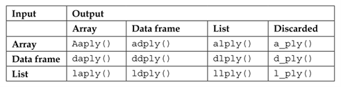

The first argument is the name of the data frame. We put iris, since the iris dataset is in the data frame structure, and we want to work on it.
The second argument is for a variable or variables, according to which we want to split our data frame. In this case, we have Species.
The third argument is a function that defines what kind of task we want to perform on each subset.
Note that the first letter of the function name specifies the input, and the second letter specifies the output type:

Table 1: Types of funcctions in the plyr package
Note: mapply() can take multiple inputs as separate arguments, whereas a*ply() takes only a single array argument.
10.2 Dplyr
Quite often, in real-life situations, we start our analysis with a dataframe-type structure. What do we do after getting a dataset and what are the basic data-manipulation tasks we usually perform before starting modeling?:
Check the validity of a dataset based on conditions.
Sort the dataset based on some variables, in ascending or descending order.
Create new variables based on existing variables.
Finally, summarize them.
dplyr can work with other data frame “backends” such as SQL databases. In fact, there is an SQL interface for relational databases via the DBI package
dplyr can also be integrated with the data.table package for large fast tables.
10.2.1 dplyr Grammar
All dplyr functions have a few common characteristics:
The first argument is a dataframe.
The subsequent arguments typically describe which columns to operate on using the variable names (without quotes).
The output is a new datafram (dplyr doesn’t modify the existing original dataset because dplyr functions never modify their inputs).
dplyr’s verbs are organized into four groups based on what they operate on: rows, columns, groups, or tables.
Table 2. Dplyr functions
Columns
Rows
select()
filter() (base: subset)
rename()
arrange()
mutate()
distinct()
relocate()
slice()
Because each verb does one thing well, solving complex problems will usually require combining multiple verbs, and we’ll do so with the pipe, |>.
For verbs to work at all, dataframes must be properly formatted and annotated. In particular, the data must be tidy, that is, the data comply with the following three interrelated rules:
Each variable is a column; each column is a variable.
Each observation is a row; each row is an observation.
Each value is a cell; each cell is a single value.
Note that there’s a specific advantage to placing variables in columns because it allows R’s vectorized nature to shine. dplyr, ggplot2, and all the other packages in the tidyverse are designed to work with tidy data.
10.2.2 The Pipe
The real power of dplyr arises when you start to combine multiple verbs. For example, imagine that you wanted to find the fastest flights to Houston’s IAH airport: you need to combine filter(), mutate(), select(), and arrange():
The pipe takes the thing on its left and passes it along to the function on its right so that x |> f(y) is equivalent to f(x, y), and x |> f(y) |> g(z) is equivalent to g(f(x, y), z). The easiest way to pronounce the pipe is “then”.
Even though this pipeline has four steps, it’s easy to skim because the verbs come at the start of each line: start with the flights data, then filter, then mutate, then select, then arrange.
IMPORTANT:Chaining(|>) is a powerful feature of dplyr that allows the output from one verb to be piped into the input of another verb using a short, easy-to-read syntax. To add the pipe to your code, we recommend using the built-in keyboard shortcut Ctrl/Cmd + Shift + M. You’ll need to make one change to your RStudio options to use |> instead of %>%.
10.2.3 filter()
The filter() function is used to extract subsets of rows from a dataframe. This function is similar to the existing subset().
# Flights that departed on January 1flights |>filter(month ==1& day ==1)# Flights that departed in January or Februaryflights |>filter(month ==1| month ==2)
There’s a useful shortcut when you’re combining | and ==: %in%. It keeps rows where the variable equals one of the values on the right:
flights |>filter(month %in%c(1, 2))
10.2.4 arrange()
The arrange() function is used to change the order of the rows of a dataframe according to the value of the variables/columns (while preserving corresponding order of other columns).
Example 1:
chicago <-arrange(chicago, date) ## Columns can be arranged in descending orderchicago <-arrange(chicago, desc(date))arrange(iris, Sepal.Length, desc(Sepal.Width))
It takes a data frame and a set of column names (or more complicated expressions) to order by. If you provide more than one column name, each additional column will be used to break ties in the values of the preceding columns.
Tidyverse:
# Sorts by the departure time, which is spread over four columns# We get the earliest years first, then within a year, the earliest months, etc.flights |>arrange(year, month, day, dep_time)# Use desc() to re-order the df based on that column in big-to-small order flights |>arrange(desc(dep_delay))
Note that the number of rows has not changed – we’re only arranging the data, we’re not filtering it.
10.2.5 distinct()
Sometimes, we might encounter duplicate observations in a data frame. The distinct() function helps eliminates these observations (finds all the unique rows in a dataset).
Example:
distinct(iris, Species, Petal.Width)
Tidyverse:
flights |>distinct()
Most of the time, however, you’ll want the distinct combination of some variables, so you can also optionally supply column names:
flights |>distinct(origin, dest)# Keep other columns when filtering for unique rowsflights |>distinct(origin, dest, .keep_all =TRUE)
If you want to find the number of occurrences instead, you’re better off swapping distinct() for count(). With the sort = TRUE argument, you can arrange them in descending order of the number of occurrences.
Example:
flights |>count(origin, dest, sort =TRUE)
10.2.6 slice()
You can extract the subset of a dataframe using the slice() function.
Example:
slice(iris, 95:105)
There are five handy functions that allow you to extract specific rows within each group:
# Takes the first row from each group.df |>slice_head(n =1)# Takes the last row in each groupdf |>slice_tail(n =1) .# Takes the row with the smallest value of column xdf |>slice_min(x, n =1) # Takes the row with the largest value of column xdf |>slice_max(x, n =1) # Takes one random rowdf |>slice_sample(n =1)
You can vary n to select more than one row, or instead of n =, you can use prop = 0.1 to select (e.g.) 10% of the rows in each group. For example, the following code finds the flights that are most delayed upon arrival at each destination:
Example:
flights |>group_by(dest) |>slice_max(arr_delay, n =1) |>relocate(dest)
10.2.7 select()
Most of the time, you do not work on all the variables in a dataframe. Selecting a few columns could make the analysis process less complicated. The select() function can be used to select columns of a data frame that you want to focus on.
Example:
chicago <-readRDS("chicago.rds")names(chicago)[1:3] select(chicago, c("city", "tmpd"))select(chicago, c(1, 3))subset <-select(chicago, city:dptp)
Tidyverse:
Select columns by name:
flights |>select(year, month, day)
Select all columns between year and day (inclusive):
flights |>select(year:day)
Select all columns except those from year to day (inclusive):
flights |>select(!year:day)
Select all columns that are characters:
flights |>select(where(is.character))
There are a number of helper functions you can use within select():
starts_with("abc"): matches names that begin with “abc”.
ends_with("xyz"): matches names that end with “xyz”.
contains("ijk"): matches names that contain “ijk”.
num_range("x", 1:3): matches x1, x2 and x3.
You can rename variables as you select() them by using =. The new name appears on the left-hand side of the =, and the old variable appears on the right-hand side
Example:
flights |>select(tail_num = tailnum)
You can also omit variables using the select() function by using the negative sign:
Example:
select(chicago, -(city:dptp))
10.2.8 rename()
Renaming a variable in a dataframe in R is surprisingly hard to do! The rename() function is designed to make this process easier.
Example:
chicago <-rename(chicago, dewpoint = dptp, pm25 = pm25tmean2)
The syntax inside the rename() function is to have the new name on the left-hand side of the = sign and the old name on the right-hand side.
Tidyverse
flights |>rename(tail_num = tailnum)
10.2.9 mutate()
The mutate() function exists to compute transformations of variables in a dataframe. Very often, you want to create new variables that are derived from existing variables and mutate() provides a clean interface for doing that (it adds new columns that are calculated from the existing columns).
Example:
# Create a pm25detrend variable that subtracts the mean from the pm25 variablechicago <-mutate(chicago, pm25detrend = pm25 -mean(pm25, na.rm =TRUE))# Other examplemutate(iris, SLm=Sepal.Length/100, SWm= Sepal.Width/100, PLm=Petal. Length/100, PWm= Petal.Width/100 )
You can also use .after to add after a variable, and in both .before and .after you can use the variable name instead of a position.
Note that since we haven’t assigned the result of the above computation back to flights, the new variables gain, and speed will only be printed but will not be stored in a dataframe.
Alternatively, you can control which variables are kept with the .keep argument. A particularly useful argument is "used" which specifies that we only keep the columns that were used in the “create” step with mutate(). For example, the following output will contain only the variables dep_delay, arr_delay, air_time, gain, hours, and gain_per_hour.
If you want to keep only the new variables and drop the old ones, we could use the transmute() function:
Example:
## Here we detrend the PM10 and ozone (O3) variablestransmute(chicago, pm10detrend = pm10tmean2 -mean(pm10tmean2, na.rm =TRUE), o3detrend = o3tmean2 -mean(o3tmean2, na.rm =TRUE)))## Note that there are only two columns in the transmuted data frame
10.2.10 relocate()
Use relocate() to move variables around. You might want to collect related variables together or move important variables to the front. By default relocate() moves variables to the front.
Tidyverse
flights |>relocate(time_hour, air_time)
You can also specify where to put them using the .before and .after arguments, just like in mutate():
The group_by() function is used to divide your dataset into groups meaningful for your analysis. You will usually use the group_by() function in conjunction with the summarize() function.
Example 1:
flights |>group_by(month)
You can create groups using more than one variable. For example, we could make a group for each date.
Example:
daily <- flights |>group_by(year, month, day)
Note that group_by() doesn’t change the data but, if you look closely at the output, you’ll notice that the output indicates that it is “grouped by” month. This means subsequent operations will now work “by month”. group_by() adds this grouped feature (referred to as class) to the dataframe, which changes the behavior of the subsequent verbs applied to the data.
You might also want to remove grouping from a dataframe without using summarize(). You can do this with ungroup().
Example:
daily |>ungroup()
10.2.12 summarize()
The summarize() function is used to calculate a single summary statistic, and reduces the data frame to have a single row for each group.
You can create any number of summaries in a single call to summarize(). One very useful summary is n(), which returns the number of rows in each group.
Example:
flights |>group_by(month) |>summarize(avg_delay =mean(dep_delay, na.rm =TRUE), n =n() )
10.2.13 Chaining (%>%)
Sometimes, it could be necessary to use multiple functions to perform a single task. The pipeline operator %>% is very handy for stringing together multiple dplyr functions in a sequence of operations.
This nesting is not a natural way to think about a sequence of operations:
third(second(first(x)))
The %>% operator allows you to string operations in a left-to-right fashion:
first(x) %>%second(x) %>%third(x)
This way we don’t have to create a set of temporary variables along the way or create a massive nested sequence of function calls.
Once you travel down the pipeline with %>%, the first argument is taken to be the output of the previous element in the pipeline.